Bienvenida a MetaTurnos
MetaTurnos es un sistema de gestion de turnos pensado para negocios de servicios. Desde un solo panel podras manejar tu agenda, tu equipo, los pagos y la comunicacion con tus clientes.
Vista diaria, semanal y mensual con actualizacion en tiempo real.
Cobros presenciales y senas online via Mercado Pago.
Roles diferenciados para cada integrante del staff.
URL personalizada para que tus clientes reserven online.
Estadisticas de turnos, ingresos y clientes exportables a PDF y Excel.
Recordatorios por email y WhatsApp con mensajes personalizados.
Ajustes — Perfil del negocio
En Menu lateral → Ajustes encontras seis secciones accesibles desde el menu lateral izquierdo de la pantalla. La primera es el perfil del negocio, que contiene la informacion que veran tus clientes en tu pagina publica.
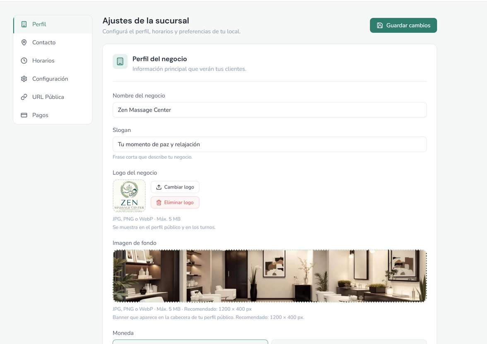
| Campo | Descripcion |
|---|---|
| Nombre del negocio | Nombre principal que aparece en el perfil publico, correos y reportes. |
| Slogan | Frase corta debajo del nombre (opcional). |
| Logo | Imagen cuadrada recomendada. Se muestra en el perfil publico y en los turnos. Formatos aceptados: JPG, PNG, WEBP. |
| Imagen de fondo | Banner de la cabecera del perfil publico. Resolucion recomendada: 1200 x 400 px. |
| Moneda | Moneda en que se expresan los precios (ARS, USD, etc.). Se aplica a toda la plataforma. |
| Rubros | Categorias de servicios que ofreces (estetica, salud, educacion, etc.). Podes elegir varios. |
Subir logo o imagen de fondo
Aparece un boton con texto "Subir logo" o "Subir imagen de fondo".
Se abre el explorador de archivos. Elegis la imagen desde tu computadora o celular.
La imagen se sube a Cloudinary automaticamente y aparece una previsualizacion.
Presiona el boton Guardar cambios en la parte superior o inferior de la pagina.
Ajustes — Contacto y ubicacion
Estos datos aparecen en tu perfil publico para que los clientes sepan donde encontrarte y como comunicarse.
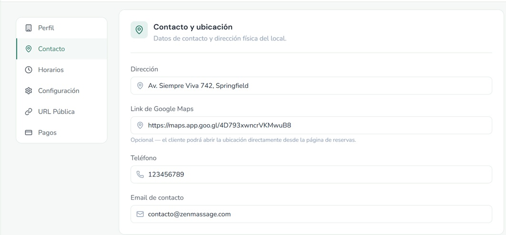
| Campo | Descripcion |
|---|---|
| Direccion | Domicilio del local. Ej: Av. Corrientes 1234, CABA. |
| Telefono | Numero de contacto. Incluir codigo de pais si corresponde. Ej: +54 11 1234-5678. |
| Email de contacto | Correo que se muestra en el perfil publico (puede ser distinto al email de tu cuenta). |
| URL de Google Maps | Enlace directo al local en Google Maps. Cuando esta configurado, aparece un boton "Como llegar" en tu perfil publico que lleva al cliente directamente al mapa. Para obtenerlo, buscas tu negocio en Google Maps, haces clic en "Compartir" y copias el enlace. |
Ajustes — Horarios de atencion
Define los dias y franjas horarias en que tu negocio acepta turnos. Los clientes solo podran reservar dentro de estos horarios.
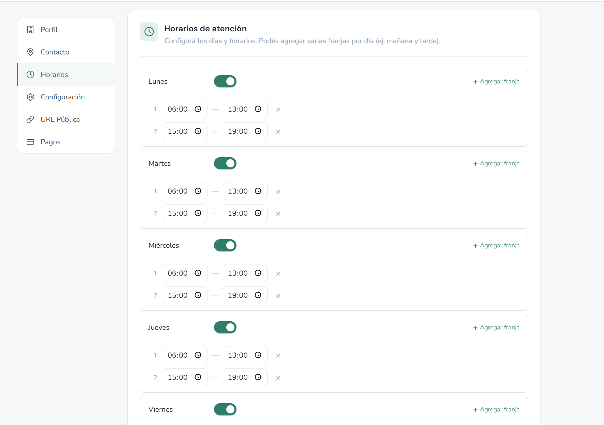
Como configurar cada dia
Para cada dia de la semana (Lunes a Domingo) hay un renglon con:
- Interruptor: activa o desactiva ese dia. Si esta desactivado aparece la etiqueta Cerrado y no se ofreceran turnos ese dia.
- Franjas horarias: cuando el dia esta activado, podes definir una o mas franjas con hora de apertura y cierre. Esto permite, por ejemplo, atender manana y tarde con un bloque al mediodia.
- Agregar franja: boton que aparece en la esquina derecha del dia activo. Agrega una franja adicional con valores predeterminados (15:00 - 19:00) que podes modificar.
- Eliminar franja: boton "x" a la derecha de cada franja. Solo aparece si hay mas de una franja en ese dia.
Horario de atencion de cada profesional
El horario del negocio define el rango disponible para todo el equipo. Pero cada profesional puede tener su propio calendario: dias que trabaja, horarios de entrada/salida y hasta bloques intermedios. Esto se configura en Menu lateral → Equipo → icono Calendario del profesional (ver seccion Disponibilidad).
Ajustes — Configuracion de reservas
Parametros que controlan como se comporta el sistema de reservas para tus clientes.
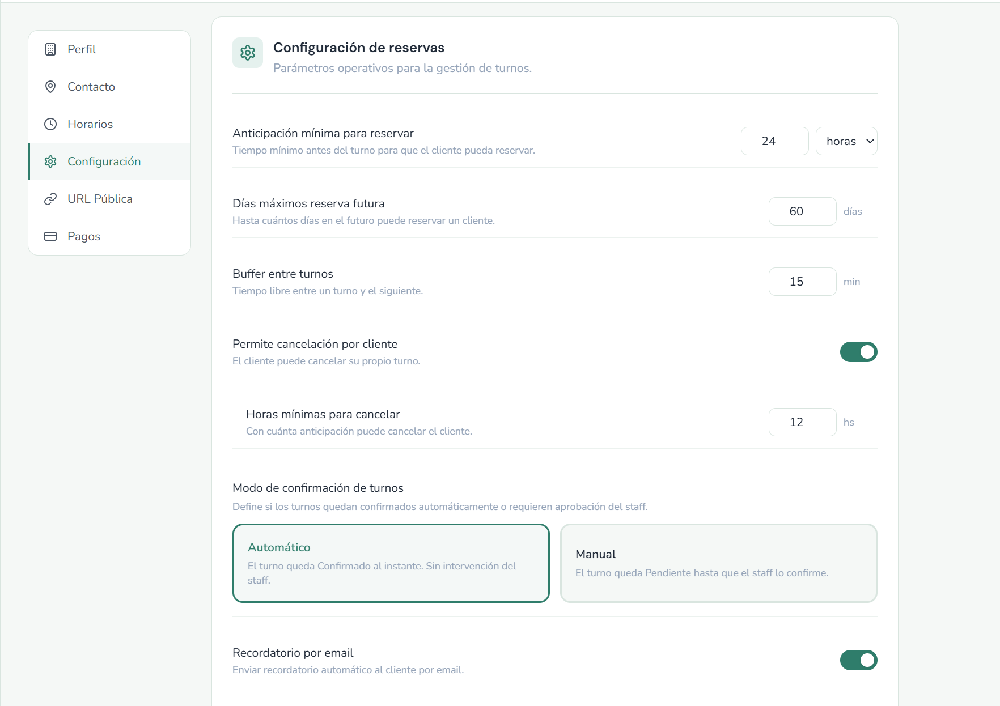
| Parametro | Descripcion |
|---|---|
| Anticipacion minima para reservar | Tiempo minimo que debe pasar entre el momento de la reserva y el turno. Ej: con 1 hora, si son las 10:00 el cliente no puede reservar para las 10:30. Se puede expresar en minutos u horas. |
| Dias maximos reserva futura | Hasta cuantos dias en el futuro puede reservar un cliente. Ej: 30 dias = solo puede reservar dentro de los proximos 30 dias. Maximo: 365 dias. |
| Buffer entre turnos | Tiempo libre que se deja automaticamente entre un turno y el siguiente del mismo profesional. Util para preparacion, limpieza o descanso. Ej: 10 minutos. |
| Permite cancelacion por cliente | Si esta activado, el cliente puede cancelar su turno desde su link de gestion. Si esta desactivado, solo el staff puede cancelar. |
| Horas minimas para cancelar | (Solo visible si se permite cancelacion) Cuantas horas antes del turno puede cancelar el cliente. Ej: 24 hs = no puede cancelar si faltan menos de 24 horas. |
| Modo de confirmacion de turnos |
Automatico: el turno queda Confirmado al instante. Manual: el turno queda en estado Pendiente hasta que el staff lo confirme desde la agenda. |
| Recordatorio por email | Cuando esta activado, el sistema envia automaticamente un email de recordatorio al cliente antes de su turno. |
| Recordatorio por WhatsApp | Cuando esta activado, habilita los botones de envio manual de WhatsApp desde el detalle del turno (ver seccion Detalle del turno). |
Plantillas de WhatsApp
Al activar el recordatorio por WhatsApp, aparecen dos campos de texto para personalizar los mensajes:
- Mensaje 24 horas antes: se usa para el recordatorio del dia previo.
- Mensaje 3 horas antes: se usa para el recordatorio del mismo dia.
Dentro del texto podes insertar variables dinamicas que el sistema reemplaza automaticamente:
| Variable | Se reemplaza por |
|---|---|
{{ClienteNombre}} | Nombre del cliente del turno. |
{{Servicio}} | Nombre del servicio reservado. |
{{Fecha}} | Fecha del turno en formato largo (ej: lunes 15 de junio). |
{{Hora}} | Hora de inicio del turno (ej: 14:30). |
Para insertar una variable, podes escribirla directamente o hacer clic en los botones de variables que aparecen debajo de cada campo de texto (la variable se inserta en la posicion del cursor).
Ajustes — URL publica
Tu negocio tiene una pagina publica donde tus clientes pueden ver tus servicios y reservar turnos. La URL tiene el formato:
metaturnos.com/tu-slug
El slug es el identificador unico de tu negocio en la URL. Por defecto se genera automaticamente a partir del nombre del negocio, pero podes personalizarlo.
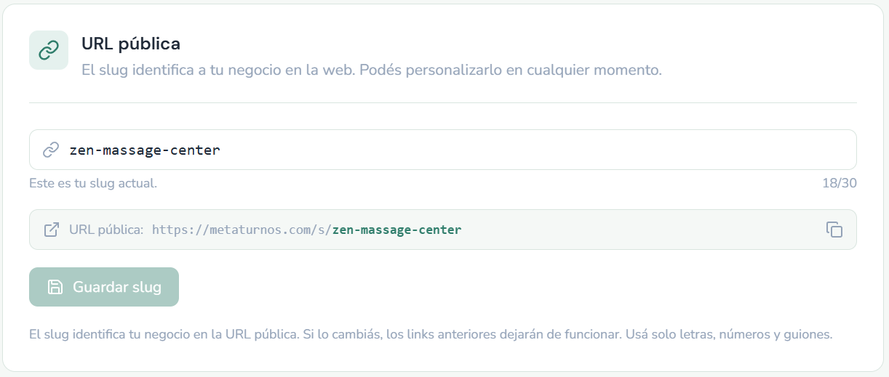
Cambiar el slug
El slug solo puede contener letras minusculas, numeros y guiones (sin espacios ni caracteres especiales).
Si el slug ya esta en uso por otro negocio, se mostrara un aviso de error.
Una vez guardado, la URL anterior deja de funcionar. Asegurate de comunicar el nuevo link a tus clientes.
Ajustes — Conexion a Mercado Pago
Conecta tu cuenta de Mercado Pago para habilitar el cobro de senas online. Cuando este activado, tus clientes podran pagar la sena al momento de confirmar una reserva desde el booking publico.
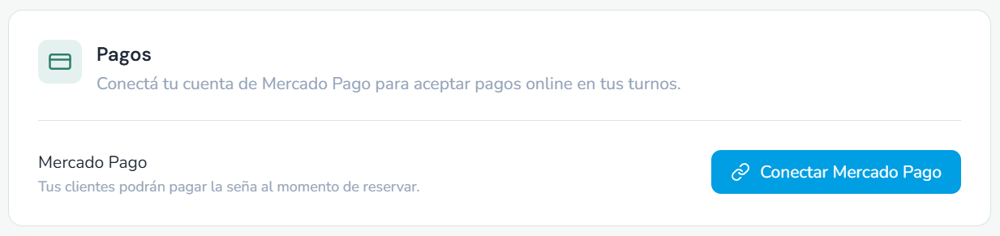
Como conectar tu cuenta
Seras redirigido al sitio oficial de Mercado Pago para autorizar la conexion.
Usa la cuenta del negocio (la asociada al email de metaturnos). Esta cuenta recibira los pagos de las senas.
Mercado Pago pedira permiso para que MetaTurnos cree cobros en nombre de tu cuenta.
Aparecera el mensaje "Mercado Pago conectado exitosamente" en verde.
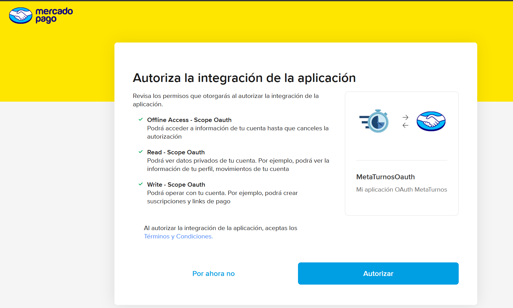
Agenda — Vista de turnos
La agenda es el corazon del panel. Desde aca podras ver todos los turnos programados, navegar entre fechas y crear nuevos turnos. Accedes desde Menu lateral → Agenda.
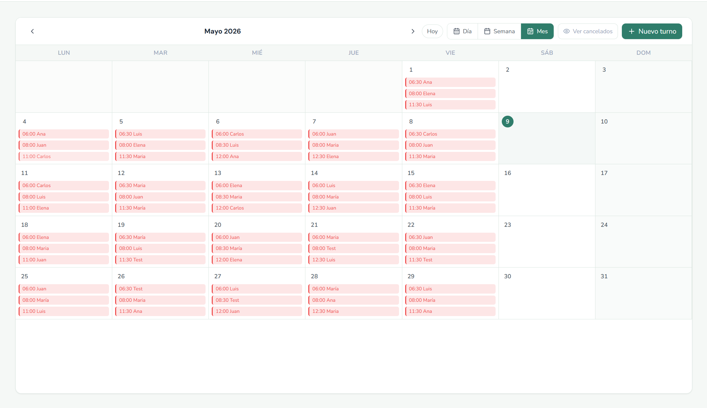
Modos de vista
En la barra superior derecha podes cambiar entre tres modos:
| Vista | Descripcion |
|---|---|
| Dia | Grilla vertical con un eje de tiempo (08:00 a 20:00). Cada profesional tiene su propia columna. Los turnos aparecen como bloques coloreados posicionados segun hora de inicio y duracion. Si dos turnos del mismo profesional se superponen, se muestran uno al lado del otro. |
| Semana | Los 7 dias de la semana como columnas con la misma grilla vertical. Incluye un filtro de profesional en la barra superior para ver solo los turnos de uno en particular. |
| Mes | Vista de calendario mensual. Cada dia muestra hasta 3 chips con nombre del cliente y hora. Si hay mas, aparece un "+N mas" que lleva al dia en vista diaria. |
Navegacion de fechas
- Las flechas ← → avanzan o retroceden un dia, semana o mes segun la vista activa.
- El boton Hoy regresa al dia actual.
- En vista mensual, hacer clic en el numero de un dia abre ese dia en vista diaria.
Linea de tiempo actual
En la vista diaria y semanal, una linea roja horizontal indica la hora actual. La agenda hace scroll automatico hasta esa linea al cargar.
Turnos cancelados o con ausencia
Los turnos en estado Cancelado o No Show se ocultan por defecto para no recargar la vista. El boton Ver cancelados / Ocultar cancelados en la barra superior permite mostrarlos u ocultarlos. Cuando estan visibles, aparecen en gris con texto tachado y con menor opacidad.
Crear nuevo turno
El boton verde + Nuevo turno (esquina superior derecha) abre un panel lateral donde podes cargar un turno manualmente seleccionando: cliente, servicio, profesional, fecha y hora de inicio. La fecha se pre-completa con el dia que estes viendo.
Detalle del turno
Haciendo clic en cualquier turno de la agenda se abre su pagina de detalle. Esta pagina tiene cinco pestanas:
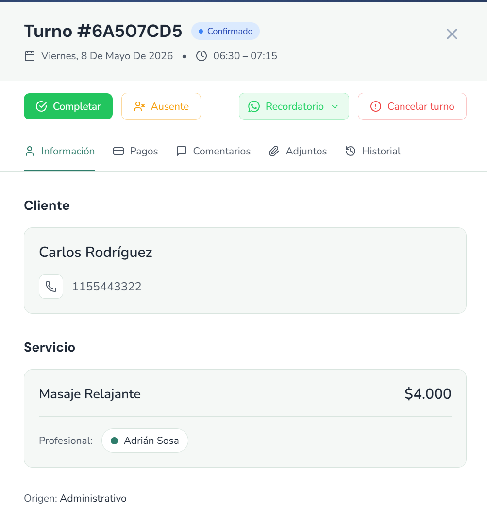
Pestana Informacion
Muestra todos los datos del turno:
- Nombre del cliente, telefono (si tenes permiso para verlo) y email.
- Servicio, profesional, fecha, hora de inicio y fin, y duracion.
- Estado actual con su etiqueta de color.
- Origen del turno (Staff si lo cargo el equipo, Booking si lo reservo el cliente online).
- Observaciones del turno.
- Total cobrado y monto de la sena (si aplica).
Acciones principales
En la parte superior del detalle, segun el estado del turno, aparecen botones de accion:
- Confirmar: pasa el turno de Pendiente a Confirmado.
- Completar: marca el turno como realizado (Completado).
- Cancelar: cancela el turno como cancelado por el staff.
- No Show: registra que el cliente no se presento.
- Registrar pago: abre el modal de pago (requiere sesion de caja abierta).
- WhatsApp: despliega un menu con dos opciones de recordatorio (24 hs y 3 hs). Hace clic para abrir WhatsApp con el mensaje pre-cargado.
Estados de los turnos
Cada turno pasa por distintos estados a lo largo de su ciclo de vida. El estado actual se muestra con una etiqueta de color en la agenda y en el detalle del turno.
| Estado | Significado | Siguiente paso |
|---|---|---|
| Pendiente | El turno fue creado pero aun no fue confirmado. Sucede cuando el modo de confirmacion esta en Manual. | El staff lo confirma o lo cancela. |
| Pendiente de pago | El cliente reservo online y necesita pagar la sena para confirmar el turno. | El sistema lo confirma automaticamente cuando se acredita el pago. |
| Confirmado | El turno esta activo y va a realizarse en la fecha y hora indicada. | Al realizarse se marca como Completado; si no asiste, como No Show. |
| Completado | El turno fue realizado correctamente. | Estado final. Se puede registrar el pago desde la pestana Pagos. |
| Cancelado (staff) | El turno fue cancelado por alguien del equipo. | Estado final. Aparece en gris tachado en la agenda si estan visibles los cancelados. |
| Cancelado (cliente) | El cliente cancelo el turno desde su link de gestion personal. | Estado final. Igual que el anterior visualmente. |
| No Show | El cliente no se presento al turno. | Estado final. Se registra para que aparezca en los reportes y en el historial del cliente. |
| Pago rechazado | El cliente intento pagar la sena online pero el pago fue rechazado por Mercado Pago. | El turno se cancela automaticamente. El cliente puede intentar reservar nuevamente. |
Pagos del turno
La pestana Pagos en el detalle del turno muestra todos los movimientos de cobro asociados y permite registrar nuevos pagos presenciales.
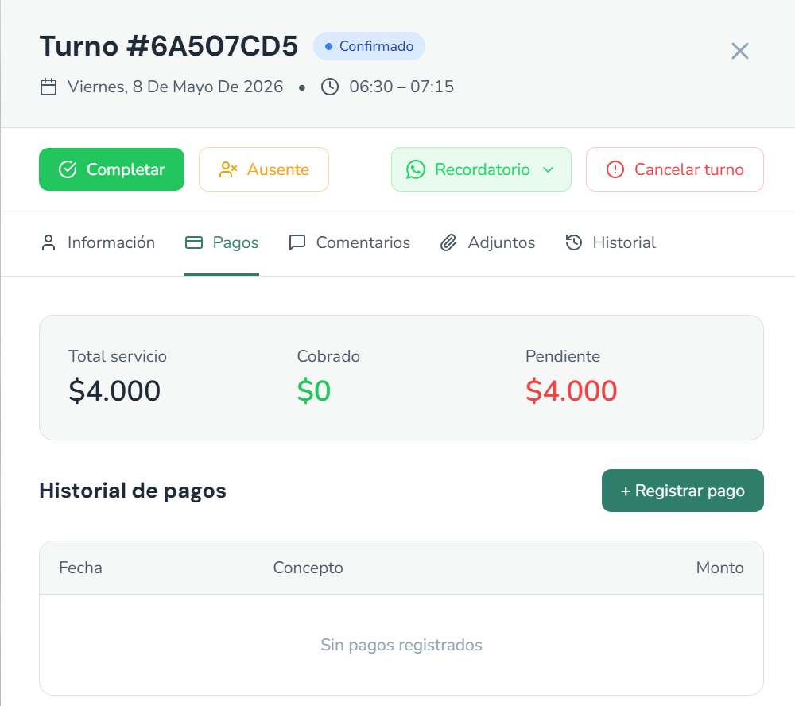
Registrar un pago presencial
Para registrar un pago debe haber una sesion de caja abierta. Si no hay sesion activa, el boton estara deshabilitado con una advertencia.
Se abre un modal con los campos del pago.
- Concepto: Pago total, Pago parcial, Sena o Ajuste.
- Medio de pago: Efectivo o Mercado Pago.
- Monto: se pre-completa con el saldo pendiente del turno.
- Observaciones: nota interna opcional.
El movimiento queda registrado en la caja y el total cobrado del turno se actualiza inmediatamente.
Comentarios del turno
La pestana Comentarios es un espacio de notas internas del equipo, visible solo para el staff. Es util para dejar indicaciones clinicas, preferencias del cliente o cualquier informacion relevante.
- Cada comentario muestra quien lo escribio y la fecha/hora.
- Para agregar uno, escribi en el campo de texto y presiona Enviar.
- Los comentarios no son visibles para el cliente.
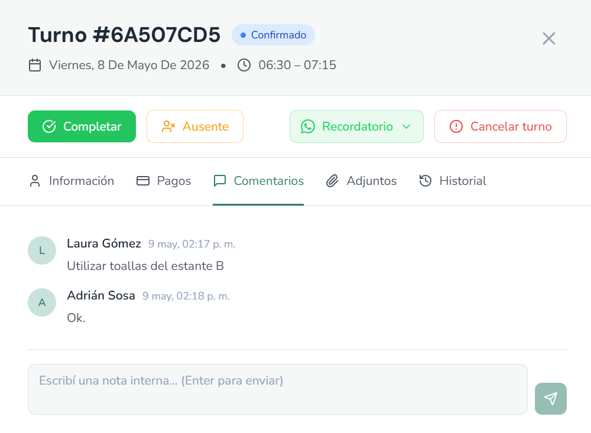
Adjuntos del turno
La pestana Adjuntos permite subir y visualizar archivos asociados a un turno: imagenes de antes/despues, documentos de consentimiento, resultados de estudios, etc.
Subir un archivo
O arrastra el archivo directamente al area punteada.
Formatos aceptados: imagenes (JPG, PNG, WEBP) y documentos (PDF). El archivo se sube a Cloudinary.
Las imagenes se muestran como miniaturas. Los PDFs muestran un icono de archivo con su nombre. Haciendo clic se abre en una nueva pestana.
Eliminar un adjunto
Cada adjunto tiene un boton de papelera. Al eliminarlo se borra tanto del registro como de Cloudinary (no se puede recuperar).
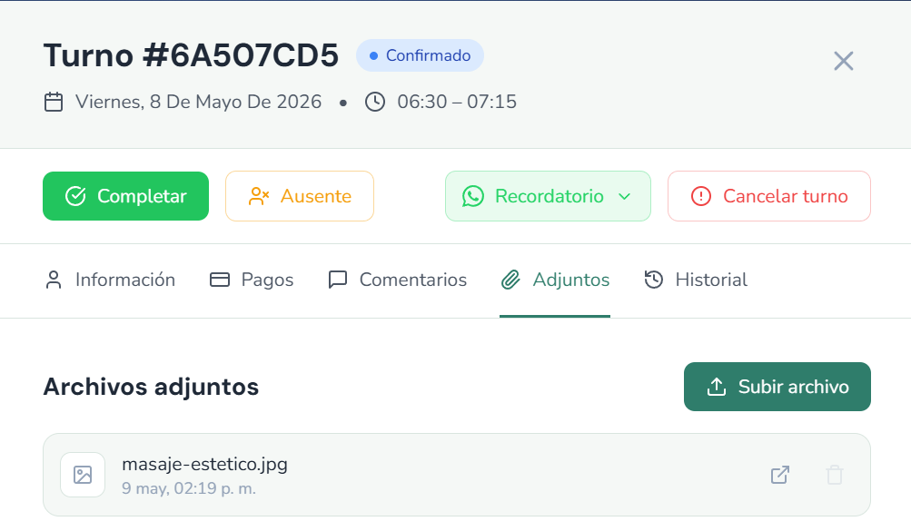
Servicios y senas
Los servicios son lo que tus clientes pueden reservar. Desde Menu lateral → Servicios podras crear, editar, activar y desactivar servicios.
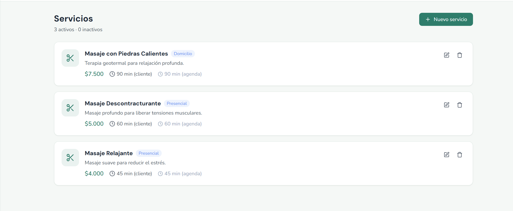
Crear o editar un servicio
Haz clic en + Nuevo servicio o en el icono de lapiz de un servicio existente. Se abre un modal con los siguientes campos:
| Campo | Descripcion |
|---|---|
| Nombre * | Nombre del servicio tal como lo vera el cliente. Ej: "Corte de cabello". |
| Descripcion | Descripcion detallada del servicio (opcional). Visible en el perfil publico. |
| Precio * | Precio del servicio en la moneda configurada en Ajustes. |
| Modalidad | Tipo de prestacion del servicio. Las opciones disponibles son: Presencial (el cliente asiste al local), A domicilio (el profesional se desplaza al cliente) y Online (atencion remota por videollamada u otro medio). |
| Duracion cliente (min) | Tiempo que dura el servicio desde la perspectiva del cliente. Es el que se muestra en el booking publico. |
| Duracion agenda (min) | Tiempo que bloquea en la agenda del profesional. Puede ser mayor a la duracion del cliente para incluir tiempo de preparacion o limpieza post-turno. |
Senas
Si el servicio requiere un pago anticipado (sena) para confirmar la reserva, activa la opcion Requiere sena y configura:
| Tipo de sena | Descripcion | Ejemplo |
|---|---|---|
| Fija ($) | El cliente paga un monto fijo sin importar el precio del servicio. | Sena de $2.000 para un servicio de $10.000. |
| Porcentaje (%) | El cliente paga un porcentaje del precio del servicio. | 30% de sena = $3.000 para un servicio de $10.000. |
Servicios a domicilio — mensaje del cliente
Cuando un servicio tiene la modalidad A domicilio, el proceso de reserva cambia levemente para que el cliente pueda indicar donde debe ir el profesional.
En el paso de confirmacion del booking publico aparece un campo de texto obligatorio con el titulo "Direccion o indicaciones para llegar". El cliente debe completarlo antes de poder finalizar la reserva.
Una vez que el turno se crea, el mensaje del cliente llega al profesional por tres vias:
- Campanita (notificacion en tiempo real): al recibir un nuevo turno a domicilio, la notificacion muestra el texto "Tiene un mensaje del cliente" debajo del nombre y servicio.
- Email al staff: el correo de nuevo turno incluye las indicaciones en el cuerpo del mensaje, debajo de los datos del turno.
- Detalle del turno: en la pestana Informacion del turno, la seccion "Observaciones" muestra el mensaje completo que dejo el cliente.
Desactivar y reactivar un servicio
Desactivar un servicio lo quita del booking publico y del selector de nuevos turnos. Los turnos ya agendados para ese servicio no se ven afectados. Para desactivarlo, haz clic en el icono de papelera. Para reactivarlo, haz clic en el icono de tilde verde que aparece en los servicios inactivos.
Equipo — Usuarios y roles
Desde Menu lateral → Equipo podras agregar, editar y gestionar a todos los integrantes de tu negocio. Solo los usuarios con rol Owner o Administrativo pueden ver y modificar esta seccion.
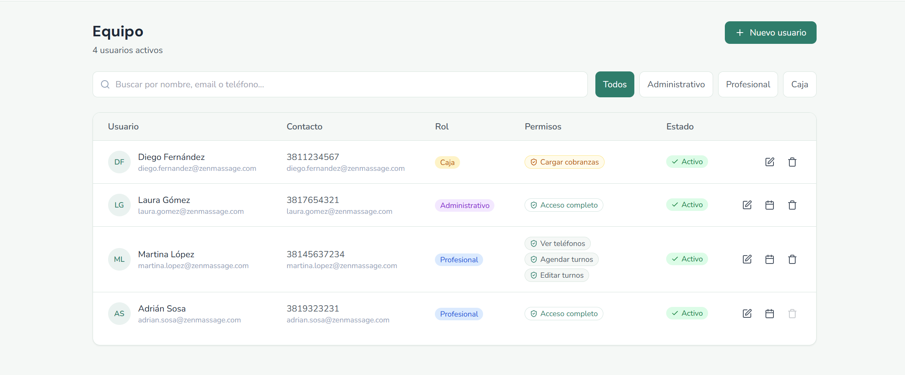
Roles disponibles
| Rol | Descripcion |
|---|---|
| Administrativo | Acceso completo al panel: puede ver y editar toda la agenda, gestionar el equipo, ajustes y reportes. Es el segundo nivel de autoridad despues del Owner. |
| Profesional | Ve solo su propia agenda ("Mi agenda"). Puede consultar el detalle de sus turnos. No tiene acceso a la configuracion del negocio ni al equipo. |
| Caja | Acceso enfocado en la gestion de pagos y caja. Puede registrar cobros y ver el estado de la caja. |
Estados de usuario
| Estado | Descripcion |
|---|---|
| Activo | El usuario puede iniciar sesion y usar el sistema normalmente. |
| Invitacion pendiente | Se creo el usuario y se le envio el email de invitacion, pero todavia no completo el registro (no establecio su contrasena). |
| Inactivo | El usuario fue desactivado. No puede iniciar sesion pero su historial se conserva. |
Agregar un nuevo usuario
Se abre el modal de creacion.
Nombre, apellido, email y telefono son obligatorios.
Administrativo, Profesional o Caja.
Ver seccion siguiente.
El sistema envia automaticamente un email de invitacion. El usuario elegira su contrasena al aceptar la invitacion. Mientras no lo haga, aparecera con estado "Invitacion pendiente".
Reenviar invitacion
Si el usuario no recibio el email o lo perdio, en la fila del usuario con estado "Invitacion pendiente" aparece el icono de sobre. Haciendo clic se reenvia la invitacion y se genera un nuevo link que tambien podes copiar al portapapeles con el icono de link que aparece a continuacion.
Permisos adicionales
Ademas del rol, cada usuario puede tener permisos granulares que habilitan funciones especificas independientemente del rol asignado. Esto permite, por ejemplo, que un Profesional pueda tambien agendar turnos para otros.
| Permiso | Descripcion |
|---|---|
| Agendar turnos | Permite crear nuevos turnos desde la agenda. |
| Editar turnos | Permite modificar el estado, horario y profesional de un turno existente. |
| Cargar cobranzas | Permite registrar pagos en el detalle de un turno (requiere sesion de caja abierta). |
| Ver telefonos | Permite ver el telefono del cliente en el detalle del turno. Si no tiene este permiso, el campo aparece oculto. |
| Gestionar ajustes | Permite acceder y modificar la seccion de Ajustes del negocio. |
Matriz de acceso por rol
| Funcion | Owner | Admin | Profesional | Caja |
|---|---|---|---|---|
| Ver agenda completa | ✓ | ✓ | — | — |
| Ver su propia agenda | ✓ | ✓ | ✓ | — |
| Crear turnos | ✓ | ✓ | Permiso | — |
| Editar turnos | ✓ | ✓ | Permiso | — |
| Registrar pagos | ✓ | ✓ | Permiso | ✓ |
| Ver telefonos de clientes | ✓ | ✓ | Permiso | Permiso |
| Gestionar equipo | ✓ | ✓ | — | — |
| Gestionar servicios | ✓ | ✓ | — | — |
| Gestionar ajustes | ✓ | ✓ | Permiso | — |
| Ver reportes | ✓ | ✓ | — | — |
| Gestionar suscripcion | ✓ | — | — | — |
Permiso = solo si tiene el permiso adicional habilitado.
Disponibilidad de profesionales
Cada profesional (y administrador) puede tener su propio horario semanal de trabajo, independientemente del horario general del negocio. El sistema solo ofrecera turnos en los slots donde el profesional este disponible.
Como configurar la disponibilidad
Busca al profesional en la lista.
El icono de calendario aparece en la fila del profesional, a la derecha. Solo aparece para usuarios con rol Profesional o Administrativo.
Similar al horario del negocio, con dias de la semana y franjas horarias. Configura los dias y horarios en que ese profesional trabaja.
Los cambios se aplican inmediatamente al booking publico.
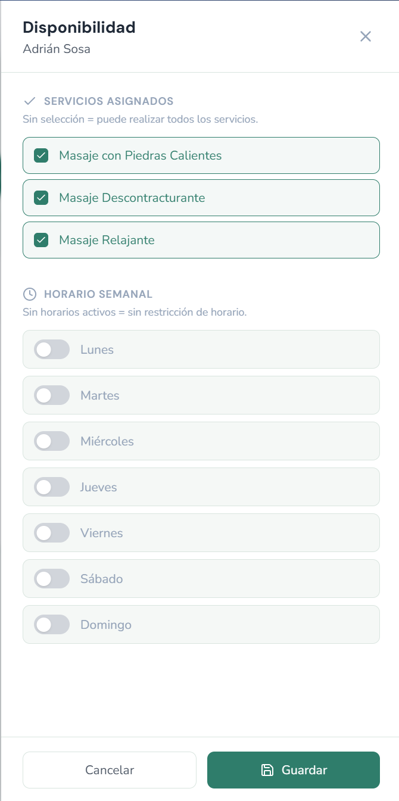
Reportes
Desde Menu lateral → Reportes accedes a estadisticas del negocio por rango de fechas. Esta funcion esta disponible para los planes Pro y Enterprise.
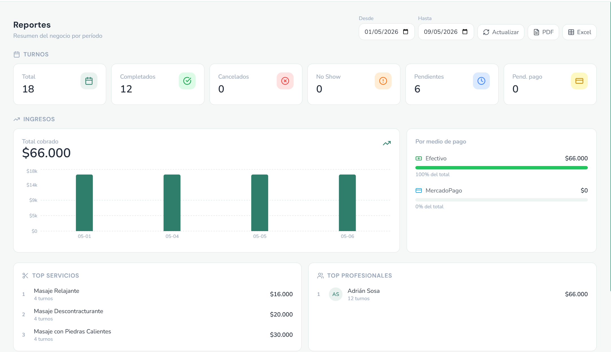
Filtro de fechas
En la parte superior hay dos selectores de fecha: Desde y Hasta. Por defecto muestran el mes actual. Los reportes se actualizan automaticamente al cambiar las fechas.
Seccion Turnos
Seis indicadores de resumen:
Cantidad de turnos creados en el periodo.
Turnos que se realizaron.
Cancelados por el cliente o el staff.
Clientes que no se presentaron.
Turnos confirmados a futuro.
Reservas sin sena pagada.
Seccion Ingresos
- Total cobrado: suma de todos los pagos registrados en el periodo.
- Grafico de barras: ingresos diarios de los ultimos 14 dias del rango seleccionado.
- Desglose por medio de pago: porcentaje y monto cobrado en Efectivo vs Mercado Pago.
Top servicios y top profesionales
Ranking de los 6 servicios y profesionales con mas turnos en el periodo, mostrando cantidad de turnos e ingresos generados por cada uno.
Seccion Clientes
- Unicos en el periodo: clientes distintos que tuvieron al menos un turno.
- Nuevos: clientes que aparecen por primera vez en el sistema.
- Recurrentes: clientes que ya habian tenido turnos antes del periodo analizado.
Exportar reportes
Los botones PDF y Excel en la barra superior generan y descargan el reporte automaticamente.
- PDF: documento de una o dos paginas con todos los indicadores, tabla de ingresos por dia y top de servicios y profesionales. Incluye el nombre del negocio y el rango de fechas en el encabezado.
- Excel: archivo con cuatro hojas: Resumen, Ingresos por dia, Top servicios y Top profesionales.
Notificaciones
MetaTurnos notifica tanto al cliente como al staff en distintos momentos del ciclo de vida del turno.
Notificaciones automaticas al cliente
| Evento | Canal | Descripcion |
|---|---|---|
| Turno creado | Confirmacion de la reserva con todos los detalles del turno y un link de gestion personal (para cancelar o consultar). | |
| Turno cancelado | Aviso de cancelacion con motivo. | |
| Recordatorio 24 hs antes | Email / WhatsApp* | Recordatorio automatico del proximo turno. |
| Recordatorio 3 hs antes | WhatsApp* | Recordatorio de ultimo momento. |
* Los recordatorios por email son automaticos si la opcion esta activada en Ajustes. Los de WhatsApp son manuales: el staff hace clic en el boton desde el detalle del turno.
Notificaciones en tiempo real (panel admin)
El panel se actualiza automaticamente via websockets (SignalR). Esto significa que si un cliente reserva un turno o cancela uno desde el booking publico, la agenda del staff se actualiza al instante sin necesidad de recargar la pagina.
Link de gestion del cliente
Cada turno tiene un link unico e intransferible que se envia al cliente por email. Con ese link el cliente puede:
- Ver los detalles de su turno.
- Cancelar el turno (si la cancelacion por cliente esta habilitada y se respeta el plazo minimo).
Suscripcion
Desde Menu lateral → Suscripcion podras ver el estado de tu plan, cambiar de plan y consultar el historial de pagos. Solo el propietario (Owner) puede acceder a esta seccion.
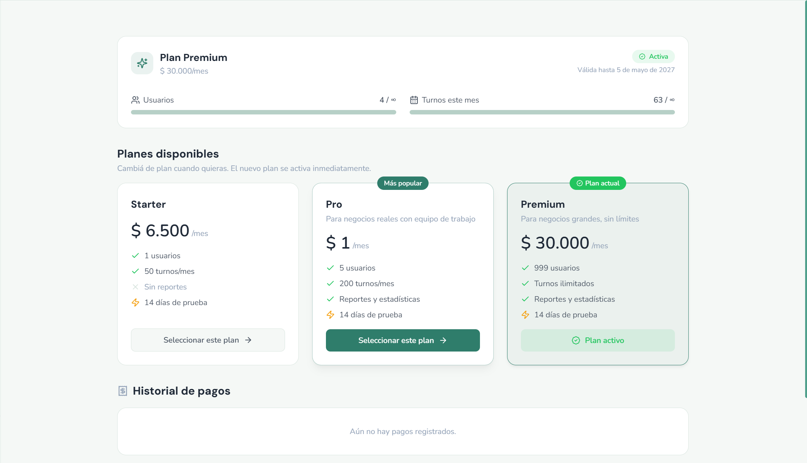
Estado actual
La tarjeta principal muestra:
- Nombre del plan activo y su precio mensual.
- Estado: Activa, Periodo de prueba o Vencida.
- Fecha de vencimiento.
- Barras de uso de usuarios y turnos del mes con colores que indican el nivel de ocupacion (verde, amarillo, rojo).
Alertas automaticas
El sistema muestra alertas visibles en esta pantalla cuando:
- La suscripcion esta vencida.
- El periodo de prueba vence en menos de 3 dias.
- Se alcanzo el 90% del limite de usuarios o turnos.
- Se supero el cupo del plan (se muestran los usuarios o turnos extras activos y se bloquean nuevos).
Cambiar de plan
Debajo del estado actual se muestran todos los planes disponibles. El plan actual aparece marcado. Para cambiar, haz clic en Seleccionar este plan en la tarjeta deseada. Seras redirigido a Mercado Pago para completar el pago. Al volver, el nuevo plan se activa inmediatamente.
Historial de pagos
Al final de la pagina hay una tabla con todos los pagos de suscripcion: fecha, plan, monto e ID de pago de Mercado Pago.
Booking flow — Vista publica del cliente
Tu pagina publica (metaturnos.com/tu-slug) es donde tus clientes pueden ver tu negocio y reservar turnos sin necesidad de tener una cuenta.
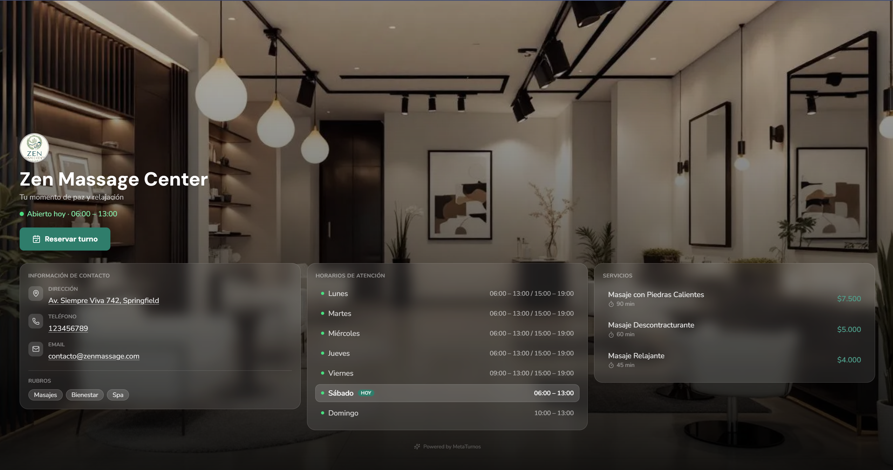
Proceso de reserva paso a paso
El cliente ve todos los servicios activos con nombre, descripcion, precio, duracion y modalidad. Puede filtrar por categoria. Selecciona uno para continuar.
Si el negocio tiene varios profesionales, puede elegir uno o dejar "Cualquiera" para que el sistema asigne segun disponibilidad. Luego elige la fecha en un calendario que solo muestra los dias dentro del rango configurado y con disponibilidad del negocio.
Se muestran todos los slots disponibles para la fecha y profesional seleccionados, respetando el buffer entre turnos y la disponibilidad del profesional. Hace clic en el horario deseado.
El cliente completa su nombre, apellido, telefono y email. Estos datos se guardan o actualizan en el registro de clientes del negocio.
Si el servicio requiere sena y la cuenta de Mercado Pago esta conectada, se muestra el monto de la sena y el boton para pagar. El cliente es redirigido al checkout de Mercado Pago. Al completar el pago, el turno queda Confirmado. Si el pago falla, el turno queda cancelado con estado Pago rechazado.
El cliente ve una pantalla de confirmacion con todos los detalles del turno. Tambien recibe un email con los datos y su link personal de gestion.
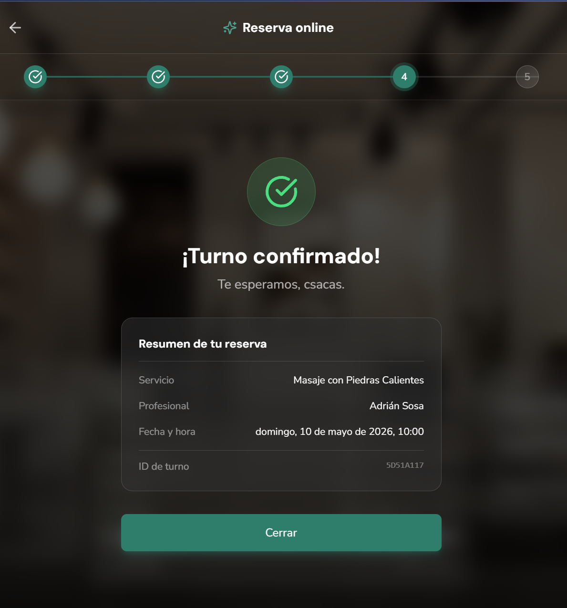
Instalar MetaTurnos como app
Acceso rapido desde tu pantalla de inicio, sin pasar por el navegador
MetaTurnos es una Progressive Web App (PWA): funciona como una app nativa pero sin pasar por ninguna tienda. Podes instalarla en tu telefono o tablet y acceder directamente desde el icono en la pantalla de inicio, igual que cualquier otra app.
En iPhone o iPad (Safari)
Abri metaturnos.com en Safari (no en Chrome ni otro navegador) y segui estos pasos:
- Toca el boton Compartir (el icono de la cajita con la flecha hacia arriba, en la barra inferior de Safari).
- Desliza hacia abajo en el menu y elige "Agregar a pantalla de inicio".
- Confirma tocando "Agregar" en la esquina superior derecha.
El icono de MetaTurnos va a aparecer en tu pantalla de inicio como cualquier otra app.
En Android (Chrome)
Abri metaturnos.com en Chrome. En muchos casos Chrome te va a mostrar un banner automatico para instalar. Si no aparece:
- Toca el menu ⋮ (tres puntos) arriba a la derecha.
- Elige "Agregar a pantalla de inicio" o "Instalar app".
- Confirma tocando "Agregar".
En escritorio (Chrome o Edge)
En la barra de direcciones del navegador vas a ver un icono de instalacion (una pantalla con una flecha). Hacele clic y confirma. MetaTurnos va a abrirse en su propia ventana, sin la barra del navegador.